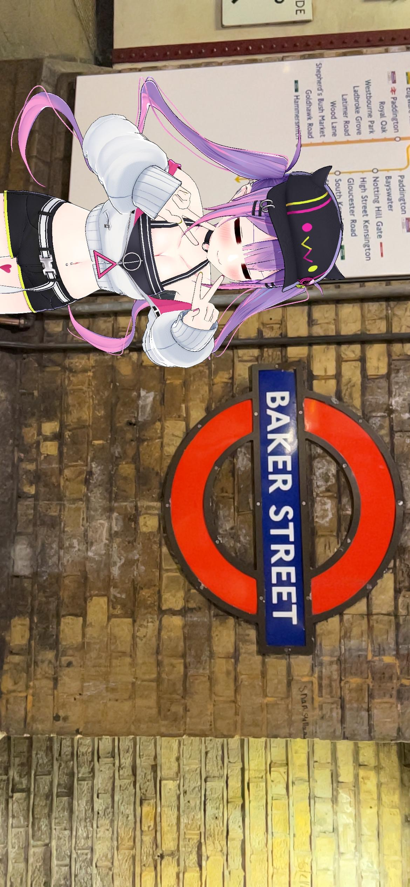

We decided to do a little tour of London for your Birthday! The scenario is basically you touring with Bibi being your guide/cameraman.There some bonus pictures as well
ザ・シャード
The Shard
トワ様：見て見て！タワーブリッジ見えるよビビ！
Towa：Look Look! You can see Tower bridge Bibi!
トワ様：v(￣Д￣)v ｲｴｲ！
Towa: yay!
トワ様：めちゃ綺麗…ピーターパンのシーンみたいな
Towa: It's so pretty... It's like that scene from Peter Pan
ビビ：ハイ、チーズ
Bibi: Alright, say cheese
ロンドン橋とタワーブリッジを背景です
London Bridge with Tower Bridge in the background
トワ様：ビビ！こっちこっち！写真撮ろうよ！
Towa: Bibi! Come, come! Let's take a picture!
ベーカー・ストリート駅
Baker Street Station
トワ様：ククク、そろそろ名探偵としてデビューの時間です！え、時間がないってどういうこと！？
Towa: Hahaha, I guess it's time for me to debut as a famous detective! Huh, What do you mean we don't have time!?

キューガーデン
Kew Gardens
トワ様：ビビ、ここに日本庭園があるって聞いて来たんだ!レッツゴー！
Towa: Bibi! I heard there a Japanese garden here! Let's Go!
Towa: Mou, why didn't you check the times it was open. Well, it's still really beautiful, so I'll forgive you this time. Let's come here together next time Bibi.
ハイド・パーク,サーペンタイン・レイク
Hyde Park, The Serpentine
トワ様：ロンドンにはたくさんの公園があります。こんな大きな湖があるとは思わなかった
Towa: London has many parks. I didn't think there was such a big lake here.
トワ様：ビビ！みてみて！スバルだよｗｗｗｗｗ
Towa: Bibi! Look Look! It's Subaru *laughs*!
チョコレートコーナー@ハロッズ
Chocolate Hall at Harrods
トワ様：これがチョコレートホール？とてもおいしそうですが、本当に高いな。買う前に予算を確認しよう！
Towa: So this is the chocolate hall. It looks good, but expensive. Well, let's check our budget first before buying.
セント・ポール大聖堂
St. Paul’s Cathedral
トワ様：これはめちゃおしゃれな！古い建物と新しい建物の対比が素晴らしいと思いませんね、ビビ！
Towa: It looks so stylish. Isn't the contrast between both old and new buildings amazing Bibi?
トワ様：頂上までたどり着けてよかった！景色は本当に美しい。
Towa: I'm glad we made it to the top. The view is really beautiful
セント パンクラス ルネッサンス ホテル ロンドン
St. Pancras Renaissance Hotel
トワ様：本当におしゃれね！この階段を歩いて、ミュージカル劇場のように歌う姿が目に浮かびます！
Towa: It's so pretty. I can see myself walking down these steps and singing as if I was in a Musical
カラフルな通路＠キングスクロス
Light-up Tunnel at King Cross
トワ様：かわいい！
Towa: Cute！
ブッシュ・ハウス
Bush House
トワ様：ガオー！！
Towa: Roar！！
サマセット・ハウス
Somerset House
トワ様：見て見て！イベントがありますよ！いこうねビビ！
Towa: Look look! There's an event happening! Let's go Bibi!
Towa: It'd be nice if we could go around the world and sing to lots of people. When we go back, let's continue to work hard on achieving our dreams. I hope you help me out too Bibi
And that's it！I may upload more pictures, but that depends on how early I can get up lol. I hope you enjoy the gift. Thanks for helping out with the site @sacredsun